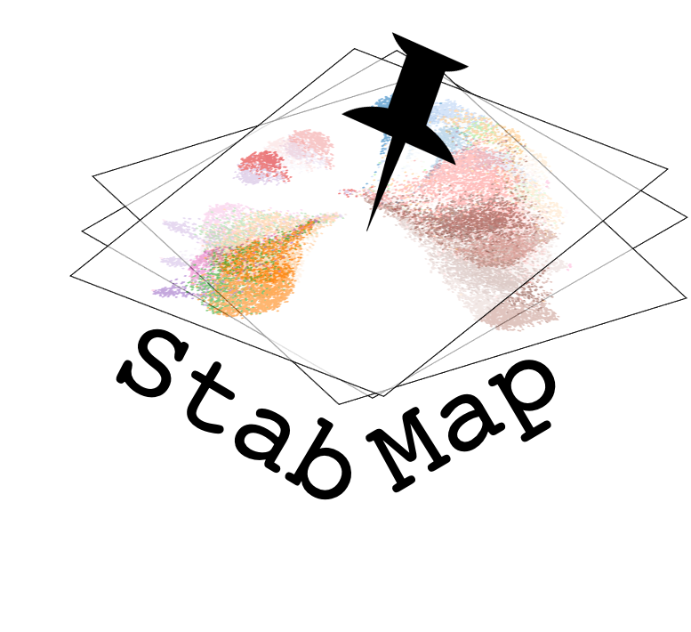

Install the following packages using BiocManager:
Then install StabMap using devtools:
library(devtools)
devtools::install_github("MarioniLab/StabMap")You can find the vignette showing how StabMap can be used with PBMC single cell data at this website.